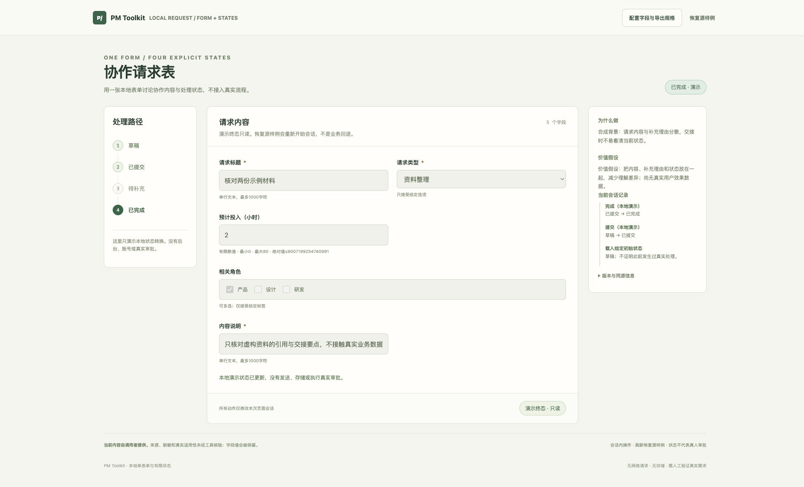
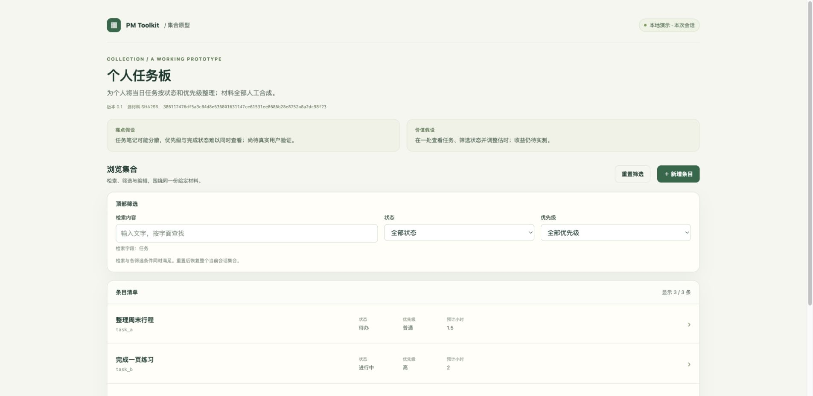
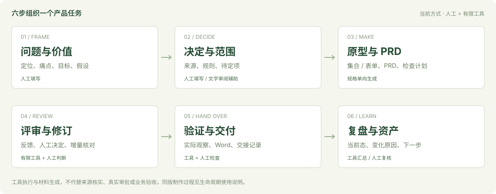

COMPLETE AN ITERATION
完成一轮阅读工具迭代
从合成讨论和范围规则，走到同版原型、PRD 与 Word；再看一次筛选修订、观察记录和交接复盘。
01 / TRY A WORKED EXAMPLE
三个合成场景使用明确输入。原型可在本地点击；文档、检查与版本材料可以对应阅读。
COMPLETE AN ITERATION
从合成讨论和范围规则，走到同版原型、PRD 与 Word；再看一次筛选修订、观察记录和交接复盘。

DISCUSS A REQUEST FLOW
体验必填与数值边界、提交、退回补充、重提和只读终态，再从配置导出新规格。

MAKE A COLLECTION
替换任务、状态、优先级与预计小时。搜索、筛选、看详情，在本次会话新增和编辑。
阅读任务通过同任务适配器连接原型、PRD 与 Word，并汇总给定观察和交付资产。技术链证据、代理使用评测和真实业务效果分别记录；真人反馈未采集。
02 / THE WORKING METHOD
六个工作包共享任务、需求、决定与检查关系。输入与判断由人提供，工具生成和核对，实际观察单独记录。

想按这条路径走一次？先看已填例，再用自己的问题替换材料。
下载完整迭代说明 ↓03 / MAKE IT YOURS
先选择准备一个任务、生成一份同版交接，还是审阅一次变更。独立集合与表单模块仍可单用。
从有限预设填写用户、痛点、价值假设、来源和规格。没有确认的内容保留待定。
python3 pm_task.py init --output ../my-task-input打开任务准备页面 ↗从任务生成原型、PRD 与 Word。完整路径需要 Python 3.10+ 和 Word 依赖，先按说明准备环境。
python3 pm_task.py build --source examples/lifecycle/before.json --output ../my-reading-task
python3 pm_task.py check --source examples/lifecycle/before.json --output ../my-reading-task下载完整步骤 ↓按需求、范围、反馈或验收证据选择文字 Skill。两项沿用公开版本，四项新增树完整治理及六次显式调用已通过；草案仍需人工核对。
提供 SKILL.md + 本次输入材料
显式要求审阅 → 人工核对引用下载当前供料说明 ↓生成命令需在仓库目录中运行。输出使用尚不存在的新目录，父目录须已存在；不会覆盖原有项目。示例命令的完整写法见运行说明。
04 / WHAT IS AVAILABLE
v1.0 提供两类有限原型与同版任务链。生成、界面操作、Word 排版和人的验收各自需要证据。
05 / GUIDES & HELP
文档按任务组织。查看源码、运行方式、支持边界和历史版本，都能从这里找到入口。
GitHub 显示源码。请下载完整仓库并解压，再打开本地 index.html 体验。当前没有在线托管演示。
修改规格后生成新目录，再执行 check。直接修改生成文件不会回灌规格；当前不提供任意 HTML/PRD 双向合并。
浏览和本地 CLI 不需要模型或账号。使用自己的 AI 助手审阅时，账号、材料处理和费用由你的宿主决定；当前只验证指定 Codex 环境显式供料。
导图与 Word 使用固定上游分发副本；准确版本和来源见说明。工具会保留调用者内容，本身不脱敏。当前未附加新的开源许可证。